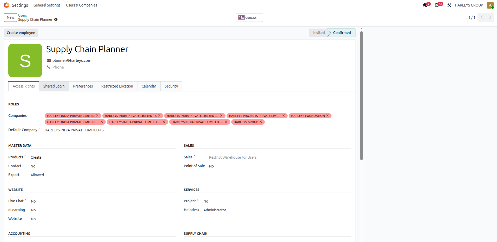
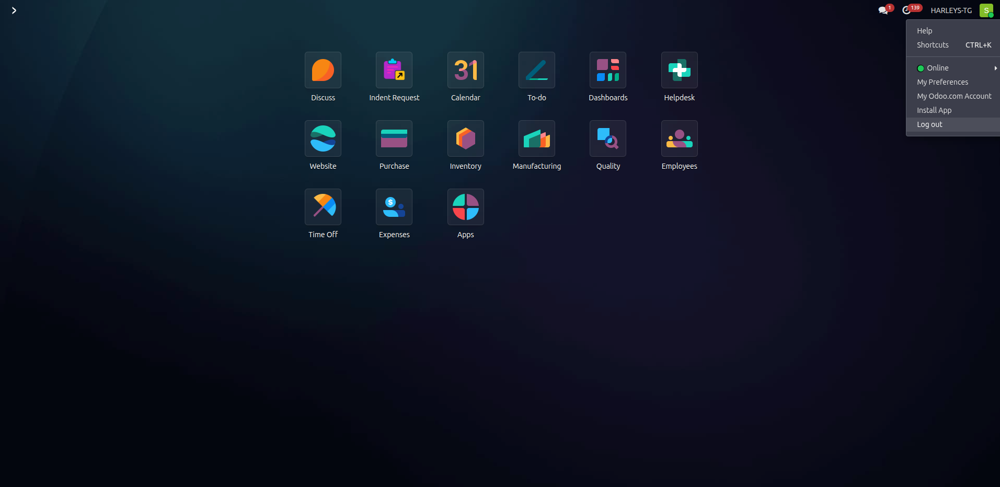
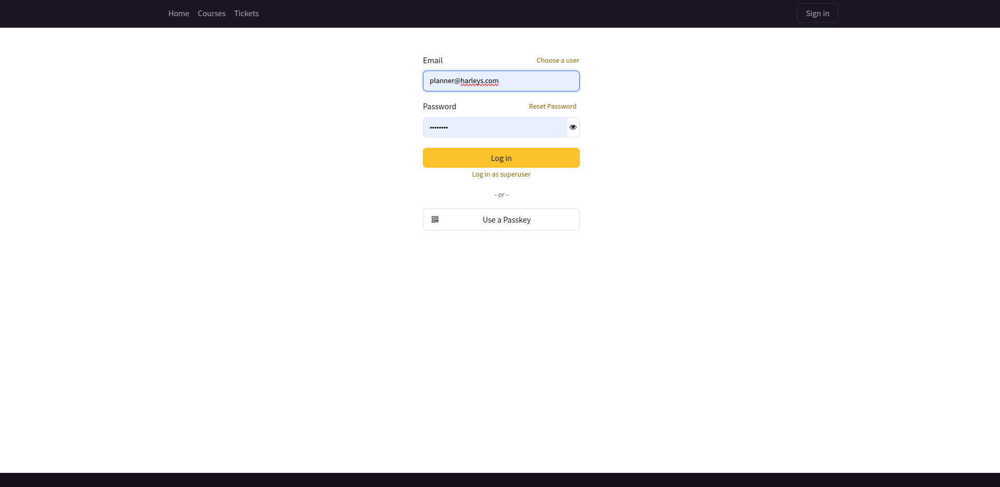

Some accounts in the system are shared by more than one person on a team. This guide explains the short extra step you'll see when signing in to one of those accounts, and why records now show exactly who did what.
Audience Employees and managers using shared accountsReading time ~5 minutes
1. What is a shared account?
Some roles are handed off between people over the course of a day or a shift — for example, a Supply Chain Planner account that whoever is on shift signs in to, rather than each person having a separate login for that role. That's a shared (functional) account: one login, used by more than one person depending on who's working, inside the same application employees already use every day.
Screenshot: the application home screen employees land on after signing in
apps-launcher.png — the normal home screen. Shared accounts work exactly the same way once you're signed in.
The challenge with a shared account on its own is that every record it touches — a Purchase Order, an Indent Request, an update to an existing record — used to only show the shared account's name, never the person who was actually doing the work. This system closes that gap: it asks whoever signs in to a shared account to confirm who they are, and then tags every action they take with their own name automatically.
2. Signing in to a shared account
Nothing changes about how you normally sign in. You'll notice a difference only if the account you're using has been marked as shared:
Sign in as usual with that account's own username and password.
Because the account is shared, you'll land on a second screen: Confirm your identity.
Enter your own personal login — the same one you already use elsewhere in the system for things like your employee self-service. This is not a new password to remember.
Once it's accepted, you're taken into the system as normal, working from the shared account exactly as before.
If you use a personal, non-shared account
You will never see this extra step. It only appears for accounts a manager has specifically marked as shared. See it in action in §5 below.
3. Why you'll see "Logged by <your name>"
From the moment you confirm your identity, anything you create or change while signed in — Purchase Orders, Indent Requests, status updates, notes, and more — is automatically tagged with your name in the activity log (the "chatter") on that record. You don't need to do anything for this to happen; it's automatic for the rest of your session.
This means that even though several people may use the same account across a day, a manager (or you) can always look at a record's history and see exactly who did what and when — the shared account's name no longer hides that.
For some record types, IT can also switch on deeper logging — so changes and deletions get attributed too, not just the message you'd normally see. That's a per-record-type setting IT controls; you don't need to do anything differently either way.
4. For managers: setting up a shared account
If you have administration access, you can mark any account as shared. Each step below is matched to the screen you'll see.
1Open Users & Companies
Go to Settings → Users & Companies → Users.
Screenshot: Settings → General Settings, with the Users & Companies menu open
settings-users-menu.png — from General Settings, open Users & Companies → Users.
2Open the account
Find the account (search by name, e.g. "planner") and open its record.
Screenshot: Users list filtered to "planner" — Supply Chain Planner / planner@harleys.com
users-list-planner.png
3Open the Shared Login tab
On the user's record, switch to the Shared Login tab, next to Access Rights and Preferences.

Screenshot: user record open, showing the Access Rights, Shared Login, Preferences and other tabs
user-record-opened.png — the Shared Login tab sits alongside the account's other settings.
authorized-employees-search-2.png — add as many people as should be allowed to use this account.
Screenshot: two employees added to Authorized Employees and saved
authorized-employees-saved.png — only the people listed here may now confirm their identity on this account.
6Save
There's nothing else to configure — the change takes effect immediately, no restart needed. The Shared Login tab itself is only visible to users with administration access, so team members can't turn it on or off themselves.
5. What it looks like in practice
A full round trip: one shared account, used by two different employees back to back, each correctly identified on their own actions.
1First employee signs in with the shared account
Screenshot: standard sign-in screen with the shared account's credentials entered
login-planner.png — no different from any other sign-in.
2They confirm their identity
Screenshot: "Confirm your identity" page, first employee's personal login entered
confirm-identity-employee-1.png — appears only because this account is shared.
3They do their work as normal
Screenshot: a new record's activity log, tagged with the first employee's name
indent-created-tagged.png — the record's activity log shows who actually created it.
4They log out at the end of their shift

Screenshot: account menu open with the Log out option
logout-menu.png — a normal sign-out. The shared account is now free for the next person.
5The next employee signs in with the same shared account

Screenshot: standard sign-in screen, the shared account's credentials entered again
login-planner-2.png — same account, same credentials, next person on shift.
Screenshot: "Confirm your identity" page, second employee's own personal login entered
confirm-identity-employee-2.png — a different person, confirming with their own login.
6Their own action gets their own tag
Screenshot: the same record, later change tagged with the second employee, original entry unchanged
indent-status-change-tagged.png — two different people, sharing one account, each show up correctly for their own action on the same record.
6. Common questions
What if my name doesn't show up correctly?
The main record itself will always show the correct name. Line items and similar sub-records only show it once IT has switched on deeper logging for that record type — if you spot one that hasn't, flag it to IT rather than assuming something's broken.
What happens if a record is deleted?
Deletions are logged too. For records with no natural place to show it, the deletion is kept in a separate administration log instead, so it's never lost.
Does this create a new password I have to remember?
No. You use your existing personal login — the same one you already use for self-service — nothing new to set up.
Will this slow down my sign-in every time?
It's a single extra screen shown once per sign-in session on a shared account, not on every action you take afterward.